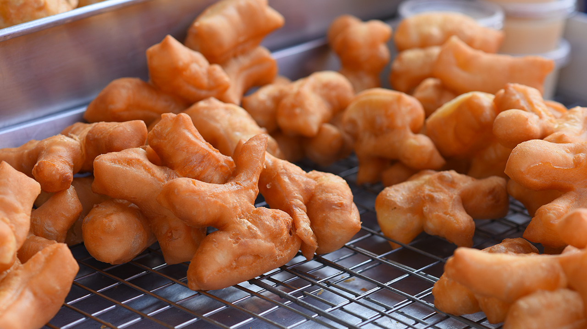

Welcome to CAMT888 best PaTongKo
Pa-tong-go
When they live on land until they become adults, when will they be ready to mate? Then place the eggs in hot oil.The laying of eggs must be made immediately in order for the young to be born alive.
Pa-tong-go
will leave the special is the body. made the tribe take it as a symbol of eternal love. stay together until death While swimming in the oil, humans will catch and eat Pa-tong-ko.
Some places will use the oil in the basin to fry the chicken. is the destruction of housing As a result, the situation of Pathongko is at risk of extinction.
